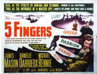

|
Body
Parts
By Stu Kobak
Heads roll in every direction of the widescreen
in Tim Burton’s new movie Sleepy Hollow, a garish and
playful interpretation of "The Legend of Sleepy
Hollow." Johnny Depp dodges the sword swipes of the
headless horseman with innocent guile, but all those bouncing
heads can’t help but make you think of body parts.
The parts are more effective than the
whole. At least they can be used more dramatically in certain
situations. An artfully used finger can inflict more terror into
a film than a whole hand ever could. A single arm can be
infinitely more powerful than an entire dead body.
The hand is one
of the most popular body parts. You can do so much with a hand.
Hell, if you are Oliver Stone you can write and direct a movie
called The Hand. Can you just imagine this delightful
little hand running all over the place? All that terror packed
into five fingers. Then
there was Thing in The Addams Family. Thing, you will
recall, is nothing more than a detached hand that zooms along
the floor like something out of a Warners cartoon. Thing is not
alone. Think of the creepy thriller The Hands of Orlac:
Peter Lorre is the demented doctor who grafts the hands of a
murderer onto a pianist who has lost his hands in an accident.
Lorre, incidentally, is in love with the pianist’s wife. Now,
that’s what I call a hand job. Directed by the great
cinematographer Karl Freund who also directed
The
Mummy, Hands of Orlac is lit to horrific
perfection.
Speaking of The Mummy, The
Mummy’s Hand became the title of a movie in Universal’s
successful film series. That harks back to that marvelous moment
in the original 1932 film when the long dead Mummy is brought
back to life. The hand reaches out onto to a shoulder in a
terrifying act. But when you can’t separate the hand from the
body it loses some of its devious individuality. You can catch The
Mummy in an excellent DVD from Universal or even watch
the latest remake of The
Mummy which is infused with a totally different spirit.
Even venerated Japanese director Akira
Kurosawa got on the hand bandwagon in Yojimbo.
Early in the film a dog trots happily through the main street
with a severed hand clutched in its mouth. It’s one of the
darker moments in Kurosawa’s entertaining tale of a wandering
Samurai. You can freeze-frame the dog in the act on Voyager’s
Criterion Collection DVD of Yojimbo.
John Boorman can lay claim to being the
king of arm and hands. It took two body parts for Boorman to
brilliantly raise Excalibur out of the water. The Lady in
the Lake did her best work hidden beneath the water save for the
powerful rising. It’s not the first time Boorman dug deep to
come up with a hand above the water. Remember the marvelous
finish to Deliverance. Can you ever forget the moment
when a hand rises up out of the river rapids? A Devilish use of
body parts! You can examine director Boorman's hand signals in
both Deliverance and Excalibur available from
Warners on DVD.
The best use of
body parts does not have to be confined to horror. Ever watch
the nimble feet of Fred Astaire take on a life of their own.
They may be a pair of the sweetest body parts ever to grace a
Hollywood sound stage. But where, oh where is Astaire on DVD. Well, he arrives in a
new double treat from Universal in Holiday Inn,
double-billed with Going My Way, a perfect treat for the
holiday season.
Royal
Wedding is available in a fairly sad transfer and while
there are inspirational Astaire moments, it is not one of the
better examples of the use of his body parts. You can also catch
Astaire mostly from the waste up in The Towering Inferno
and Ghost Story. My advice is to catch the beat of the
feet. Truly vintage body parts!
Astaire may have had the nimblest feet,
but no one used feet more effectively than Alfred Hitchcock in Strangers
on a Train.
One of his main characters is completely introduced through his
feet. The shoes he wears go a long way to defining his
character. Hitchcock creates enormous suspense by eliminating
most of Bruno’s body in a perfect example of why the parts can
be ever so more effective than the whole. Strangers on a
Train is available on DVD from Warner in an excellent black
and white transfer. Pop in the player and take the time to count
the footsteps before Bruno Anthony is revealed.
Say all you want about dancing feet and
nifty shows, but My Left Foot set a new standard for
miraculous use of the lower digits. The film delivers one hell
of a kick. Daniel
Day-Lewis received the Academy Award for his wonderful
performance as Christy Brown. You can catch Day-Lewis’s
terrific performance on HBO’s DVD of My Left Foot.
Severed
body parts present an insurmountable obstacle when trying to
convey sexiness. A long leg exposed at the thigh needs the rest
of the fine lady to invite venal delight.
The ankle of Barbara Stanwyck in Double
Indemnity is arguably the sexiest ankle ever to rankle a
screen male. Director Billy Wilder with screenwriting partner
I.A.L Diamond wrote some great banter for Stanwyck and co-star
Fred MacMurray to heat up the screen, but the lingering lens of
the camera on that ankle was enough to fire up a male audience. Double
Indemnity is another DVD worth adding to your
collection.
One of my favorite body parts is the
thumb. The artful use of a thumb by Clark Gable in It
Happened One Night brought a whole new meaning to the art of
hitchhiking. Gable arched his thumb in arrogant salute to male
superiority, but it was the gams of Claudette Colbert that won
the day. Catch the thumb and the gams on a Columbia new DVD,
part of their continuing Classic Collection, scheduled for a
12/28/99 release.
The best use of a single eye owes it
all to special effects, though the imagination of a filmmaker
must get some credit too. In Star
Trek: First Contact the camera begins on the eye of
Captain Jean-Luc Picard an opens up to a universe.
You can see this magic cinema moment on the Paramount
DVD.
The pinky is certainly an underused
body part. The most delicate appendage on the hand, the pinky
found a way to create a powerful screen image in The Yakuza.
The terrific samurai noir includes a scene of traditional yakuza
mutilation, the severing of a pinky as a sign of
acceptance.
Robert
Mitchum, short one pinky, then kills a bunch of assassins. The
ritual is also exercised to chilling effect in Black
Rain, but anti-hero Michael Douglas isn’t the one to
give up a digit. Ridley Scott saves this treat for the bad guy. Black
Rain displays its blood on DVD from Paramount. No sign of
Sydney’s Pollack’s The Yakuza on DVD, but I keep
hoping.
Sometimes a writer gets carried away by
body parts. Tom Schulman, whose sensitive writing helped make Dead
Poets Society (Available from Disney on DVD) play the
right notes, is over the top in his use of body parts, going so
far as to name his debut directing effort Eight Heads in a
Duffle Bag. What were you thinking Tom? One severed head is
enough, but eight. Schulman actually has the audacity to have
them pop out of the bag and break into a grand ghoulish chorus.
Joe Pesci gets the job of chasing the heads down. No sign of
these heads on DVD, but who cares.
Speaking of severed heads, they make
great spear material. Five will get you ten that moments after
severing ahead some eager movie dude will be cavorting with a
body part on a stick. That’s a Hollywood convention that must
be honored.
Ask Sam Peckinpah: there’s nothing
better than a head in a bag. Keep a head in a bag long enough
and the flies come a running. That’s what Bring Me the Head
of Alfredo Garcia is all about. Warren Oates has the task of
lugging the head around while an assortment of bad Mexican guys
look to sever his something. Not yet available on DVD, do you
think some enterprising studio will deliver a special edition in
a bag?
There are some really great films that
contain body parts in the titles. But they don’t necessary
deliver the body part goods in severed packages. Body part aficionados may be disappointed by the lack of
detached digits in a film called Five Fingers.
However, movie lovers who discover this superb espionage
docu-drama starring James Mason will be delighted. The Hand
that Rocked the Cradle has very little to do with body parts
other than those of Rebecca De Mornay, looking especially
delicious on the DVD of the Curtis Hanson directed movie. Cool
Hand Luke delivers the goods in the person of Paul Newman in
prison attire. The widescreen anamorphic DVD make not feature
any body parts, but you can be sure to get a hell of a good kick
from this top-notch entertainment. I sure hope Fox decides to
release The Left Hand of God. My memory of the film is
probably much better than the reality, but anything starring
Humphrey Bogart and Gene Tierney get my movie juices flowing.
It’s a big widescreen drama set in China and directed by
Edward Dmytryk.
Probably
the body part most over-used body part in movie titles in the
heart. For every bleeding heart, there are romances galore that
feature enough tears for a simultaneous shoot of the Johnstown
Flood. The latest heart is Music of the Heart, a film
that started out as "Fifty Violins." The releasing
powers realized that one heart in the title is worth many
musical instruments and that body part familiarity makes
marketing a movie much easier. Personally, I’d take the
violins every time. Not that there aren’t plenty of heart
films I love. The Heart is a Lonely Hunter is one that
comes to mind. A beautiful drama from the Carson McCullers book,
it features a mute performance from Alan Arkin and the wonderful
debut of Sondra Locke. Maybe Clint Eastwood is keeping a lick on
this heart? Unfortunately, it’s still absent from DVD. Yes,
there’s Heartburn, Heart Beat, Hearts of the
West, Heart Like a Wheel, Heart and Souls, Black
Heart, Angel Heart, Braveheart; you get the
picture, there’s no shortage of hearts.
It is interesting to note that
the heart is the king of movie organs. Internal organs are a
tough sell in Hollywood. I have never heard of a title with
intestine in it. How about lungs? Maybe someone will make the
definitive Mario Lanza biopic one day and called it Lungs. Can
you imagine pitching a movie called Lungs to the studio guys? It
might be the last movie pitch you make. Spleen: a story of
emotional turmoil. Try Stomach Ache as a title proposal and
you’ll likely get a kick in the ass. In the end, only
judicious use of body parts succeeds.
|
|
|

The
Feature
Archive has articles ranging from Akira
Kurosawa to Blonde
Bimbos and John
Ford.
The
Exquisite Muse of Zhang Yimou

The powerful image-making of Zhang
Yimou has revealed itself in virtually every film he has made. Coupled
with his remarkable collaboration with actress Gong Li, Zhang's has
built a stunning body of work Click the image to read all about
it.


Looking
for a fix of irreverent flick
dissection. Check out The
Big Combo where four guys rave
and rant about movies.
They may
be judgmental, but that's the point, isn't it. Lots of DVD reviews
plus news and more.
Click on the link to visit the judge's chambers.

A great place for movie lovers and
techies to visit for exchange of ideas. New speedy interface is an
inspiration for more dialogue.
 DVD
Informix is a British site providing a variety of DVD
information, including lots of DVD software. Check it out from
articles to links. DVD
Informix is a British site providing a variety of DVD
information, including lots of DVD software. Check it out from
articles to links.

The
Movie Poster Archive include extensive poster images from the
films of stars like Susan Hayward, Kirk Douglas, Katharine
Hepburn and many more. This month's featured star is Kirk
Douglas.
|
|
|
Imaging
Science Foundation
The Imaging Science Foundation
promotes proper standards in home theater viewing.
ISF trained technicians offer monitor calibration
services to consumers. The difference in a
properly calibrated monitor can be astounding. Click
on the image to find an ISF member near you. |
|
|
HOT
LINKS
DVD
Verdict
They
may be judgmental, but that's the point, isn't it.
Lots of DVD reviews plus news and more
The
Home Theater Forum
Looking
for lively and helpful exchanges on home theater,
DVD, movies. Visit this friendly site and get a
hardy welcome. |
| |
Home Theater Reference
Reviewing System
When you read a DVD review it's of utmost importance to
know what equipment is being used to evaluate quality.
Click on the projectors to find out more. |
|